조선기사 (2009-05-10 기출문제)
1과목: 조선공학일반
1. 길이 100m, 배수량 2100ton, 흘수선 아래 중앙횡단면적 42m2인 배가 해수에 떠 있을 때, 이 배의 주형비척계수는 약 얼마인가? (단, 해수의 비중은 1.025 이다.)
- 0.456
- 0.488
- 0.500
- 0.513
(정답률: 알수없음)

2. 배수량 W, 길이 L, 폭 B, 흘수 d, 종경사각 θ, 종메타센터높이 GML,종메타센터반지름 BML 이라 할 때, 센티미터당 트림모멘트(MTC)를 구하는 식으로 옳은 것은?
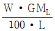
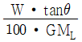
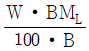
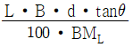
(정답률: 알수없음)
3. 다음 중 해상시운전을 할 때 실시하는 시험이 아닌 것은?
- 타력시험
- 주기관 성능시험
- 조종성시험
- 비상조타기시험
(정답률: 알수없음)
4. 배가 항해할 때 선체 운동에 의해 선수 선저부가 수면을 가아게 내려치는 현상을 무엇이라 하는가?
- 티핑(Tipping)
- 해머링(hammering)
- 종동요(Pitching)
- 슬래밍(Slamming)
(정답률: 알수없음)
5. 다음 중 본전곡선(Bonjean's curve)에 대한 설명으로 틀린 것은?
- 선체의 초기 횡복원력을 구하는데 직접적으로 이용된다.
- 각 스테이션에 홀수별 횡단면적을 나타낸 곡선이다.
- 트림상태의 선체에 대한 배수량을 구하는데 이용된다.
- 트림상태의 선체에 대한 부심의 종위치를 구하는데 이용된다.
(정답률: 알수없음)
6. 다음 중 종늑골식 구조를 취하는 것이 가장 유리한 선종은?
- 자동차 운반선
- 유조선
- 포장 화물선
- 여객선
(정답률: 알수없음)
7. 상선 등의 최대안전흘수를 규정하고 필요한 건현을 확보하도록 하는 내용의 국제협약은?
- MARPOL
- ILO
- SOLAS
- ICLL
(정답률: 알수없음)
8. 다음 중 3차원 이상의 식으로 표현되는 임의의 곡선 하부의 면적을 구하고자 할 때 가장 정도(精度)가 좋은 방법은 어떤 법칙을 사용하였을 경우인가?
- Simpson 제1법칙
- 사다리꼴 법칙
- Simpson 제2법칙
- Tchebycheff 법칙
(정답률: 알수없음)
9. 선박의 경사시험은 무엇을 알기 위해 실시하는가?
- 복원력 범위 및 배수량
- 중심 위치 및 메타센터높이
- 부심 위치 및 부면심 위치
- 경사 각도 및 복원력 소실각
(정답률: 알수없음)
10. 다음 중 선체 수선(Water line)이 곡선으로 나타나는 도면은?
- 정면도(Boby plan)
- 측면도(Sheer plan)
- 도킹도(Docking plan)
- 반폭도(Half-breadth plan)
(정답률: 알수없음)
11. 선박의 침수표면적을 계산하는 목적이 아닌 것은?
- 마찰저항 계산
- 외판배수량 계산
- 프로펠러 설계시 지름 계산
- 도장공사시 페인트 물량 계산
(정답률: 알수없음)
12. 다음 중 선미부에 위치하는 선체 부재는?
- 패션판(Fashion plate)
- 브레시트훅(Breast hook)
- 트랜성 늑판(Transom floor)
- 플레이트 스템(Plate stem)
(정답률: 알수없음)
13. 다음 중 선박에 적재할 수 있는 최대한의 중량을 말하며 만재배수량과 경하배수량의 차를 나타내는 것은?
- 배수톤수
- 재화중량
- 재화용량
- 운하톤수
(정답률: 알수없음)
14. 배수량등곡선도(Hydrostatic curves)에 나타나지 않는 것은?
- 방형계수
- 종메타센터 높이
- 부심 위치
- 중심의 길이 방향 위치
(정답률: 알수없음)
15. 다음 중 선측외판의 최상부로서 강력갑판과 연결되는 부재는?
- 현측후판
- 갑판보(Beam)
- 양상측판
- 불워크(Bulwark)
(정답률: 알수없음)
16. 선체진동을 완화하기 위하여 기진력의 진동수와 선체 고유 진동수의 공진현상을 피해야 하는데 이를 위한 일반적인 방법이 아닌 것은?
- 가능한한 기진력을 줄인다.
- 위상조정장치를 설치하여 이용한다.
- 배의 세로질량분포를 변경하여 설계한다.
- 선체건조시 블록의 숫자를 되도록 늘려 조립한다.
(정답률: 알수없음)
17. 다음 중 선체의 선수쪽을 육지로 향하게 하고 선미쪽을 먼저 진수시키는 방법을 무엇이라 하는가?
- 종진수
- 볼식 진수
- 횡진수
- 대차식 진수
(정답률: 알수없음)
18. 다음 중 주된 목적이 선박의 횡동요를 방지하기 위한 장치가 아닌 것은?
- 빌지용골(Bilge keel)
- 안정핀(Fin stabilizer)
- 밸러스트 탱크(Ballast tank)
- 감요탱크(Anti-Rolling tank)
(정답률: 알수없음)
19. 선체 길이 방향으로 각각의 위치에 해당하는 중량과 부력의 차를 나타낸 곡선은?
- 중량곡선
- 배수량곡선
- 하중곡선
- 전단력곡선
(정답률: 알수없음)
20. 실선의 길이가 169m, 선속이 10knot 이고, 상사 모형선의 길이가 4m일 때, 수조에서 예인하는 모형선의 대응 속도는 약 몇 m/s 인가?
- 0.8
- 1.5
- 33.4
- 65.0
(정답률: 알수없음)
2과목: 재료역학
21. 탄성계수 E = 204 GPa인 강철로 된 직경 d = 10mm 인 봉을 그림과 같은 곡률 반지름 ρ = 1.5m가 되도록 굽히려 한다. 이 봉울 굽히는데 필요한 굽힘 모멘트와 봉이 받는 최대 굽힘 응력은 각각 얼마인가?
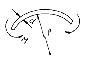
- 66.7 N·m, 680 MPa
- 66.7 N·m, 1360 MPa
- 33.4 N·m, 680 MPa
- 33.4 N·m, 1360 MPa
(정답률: 알수없음)
22. 재료와 단면이 같은 두 축의 길이가 각각 ℓ와 2ℓ일 때, 길이가 ℓ인 축에 비틀림 모멘트 T가 작용하고 길이가 2ℓ인 축에 비틀림 모멘트 2T가 각각 작용한다면 비틀림각의 크기 비는?
- 1 : 2
- 1 : 4
- 1 : √2
- 1 : 2√2
(정답률: 알수없음)
23. 직경, 재질, 길이가 동일한 2개의 강재 원형봉이 윗면(a), 아래면(b)에서 자중이 지지되고 있다. 단면 A-A′에 작용하는 평균 수직응력은 (a), (b)에서 각각 σa, σb 이다.
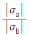
의 값은?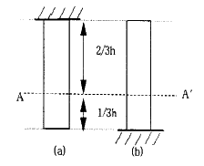
- 1/3
- 1/2
- 2
- 3
(정답률: 알수없음)
24. 평면 변형률 상태에 있는 재료의 한 요소가 다음과 같은 변형률 성분을 가지고 있다. εx = -200×10-6, εy = 1000×10-6, γxy = 900×10-6 최대 주변형률은?
- 550×10-6
- 1150×10-6
- 1600×10-6
- 1930×10-6
(정답률: 알수없음)
25. 폭 b, 높이 h인 직사각형 단면의 밑변에 대한 단면 1차 모멘트는?
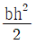
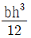
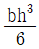
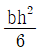
(정답률: 알수없음)
26. 그림과 같은 단면을 가진 외팔보가 자유단에 집중 하중 P = 4000N 이 중심에 작용하고 있을 때, 단면 a-b단면에 발생하는 전단응력은 약 몇 kPa 인가?
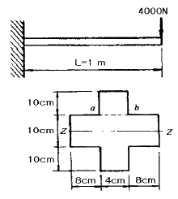
- 250
- 300
- 387
- 427
(정답률: 알수없음)
27. 지름 d = 20cm, 길이 L = 40cm인 콘크리트 원통에 압축하중 P = 20kN이 작용하여 지름이 0.0006cm 만큼 늘어나고 길이는 0.0⑤7cm 만큼 줄었을 때, 포아송 비는?
- 0.021
- 0.088
- 0.21
- 0.88
(정답률: 알수없음)
28. 외경이 do이고 내경이 di인 중공축에 비틀림 모멘트 T가 가해져서 최대 비틀림 응력 τ가 발생하였다면 이때 T는 어떻게 표현되겠는가?
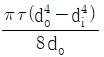
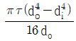
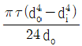
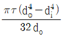
(정답률: 알수없음)
29. 17℃에서 20MPa의 인장 응력을 받도록 봉의 양단을 고정한 후 7℃로 냉각시켰을 경우 응력은 몇 MPa 인가? (단, 탄성계수 E = 210GPa, 선팽창계수 α = 11.3×10-6/℃ 이다.)
- 3.73
- 7.46
- 23.73
- 43.73
(정답률: 알수없음)
30. 피로 한도(fatigue limit)와 가장 관계가 깊은 하중은?
- 충격 하중
- 정 하중
- 반복 하중
- 수직 하중
(정답률: 알수없음)
31. 그림과 같이 10cm×10cm 의 단면적을 갖고 양단이 회전단으로된 부재가 중심축 방향에 압축력 P가 작용하고 있을 때 장주의 길이가 2m 라면 세장비는?
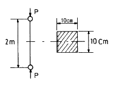
- 890
- 69
- 49
- 29
(정답률: 알수없음)
32. 두께 8mm의 강판으로 만든 안지름 40cm의 얇은 원통에 1MPa의 내압이 작용할 때 강판에 발생하는 후프 응력(원주 응력)은 몇 MPa 인가?
- 25
- 20
- 15
- 50
(정답률: 알수없음)
33. 다음 그림과 같이 보에 분포하중 q가 작용할 때 전단력 선도(shear force diagram)로 올바른 것은?
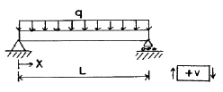
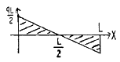
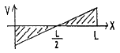
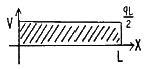
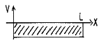
(정답률: 알수없음)
34. 그림과 같이 강선이 천정에 매달려 100kN의 무게를 지탱하고 있을 때, AC 강선이 받고 있는 힘은 약 몇 kN 인가?
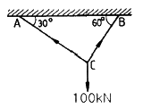
- 30
- 40
- 50
- 60
(정답률: 알수없음)
35. 회전수 250rpm으로 동력 30kW를 전달할 수 있는 전동축의 최소 지름을 구하면 몇 cm 인가? (단, 허용 전단응력은 30MPa 이다.)
- 5.0
- 5.8
- 6.1
- 6.7
(정답률: 알수없음)
36. 그림과 같은 보에 분포 하중과 집중 하중이 동시에 작용하고 있다. 전단력이 0 이 되는 위치 Xm를 구하면?
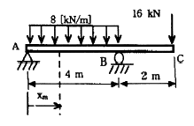
- 0.5m
- 1.0m
- 1.5m
- 2.0m
(정답률: 알수없음)
37. 그림과 같은 부정정보가 등분포 하중을 받고 있다. B점의 반력 Rb는?
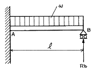
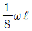
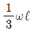
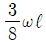
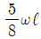
(정답률: 알수없음)
38. 외팔보 AB가 그림과 같이 부분적인 등분포하중 ω를 받을 때 자유단의 처짐(δB)은? (단, 보의 굽힘 강성 EI는 일정하고, 자중은 무시한다.)
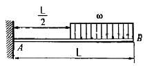
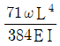
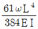
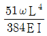
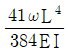
(정답률: 알수없음)
39. 길이가 L인 연겅재 단순보(simple beam)의 중앙에 집중하중 P가 작용하고 있다. 중앙 부분의 처짐이 δ였다면 연강재의 지름 d는? (단, 연강재의 탄성계수는 E 이다.)
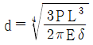
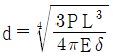
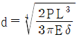
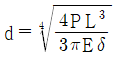
(정답률: 알수없음)
40. 그림과 같은 강제 구조물을 지지하고 있는 강선의 지름은 2.5mm이고, 허용응력 σa = 260 MPa 이다. 이 때 W = 1000 N 이 AB의 중앙에 작용하고 있을 때 자유단 B에 걸 수 있는 최대 하중 PL은 몇 N 인가?
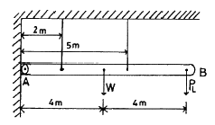
- 593
- 616
- 649
- 692
(정답률: 알수없음)
3과목: 조선유체역학
41. 유체의 흐름 속에 고정된 한 점을 통과한 유체입자의 궤적선은?
- 유선(Steamline)
- 시간선(Timeline)
- 유적선(Pathline)
- 유맥선(Streakline)
(정답률: 알수없음)
42. 물체 주위에 생긴 순환(Circulation)유동을 통해 양력 발생의 이론을 설명한 정리는?
- Maguas 정리
- Navier-Stokes 정리
- D′Alembert 정리
- Kutta-Joukowski 정리
(정답률: 알수없음)
43. 다음 중 관마찰계수의 함수를 이루는 매개변수로만 옳게 짝지어진 것은?
- 레이놀드수와 마하수
- 레이놀드수와 상대조도
- 프루드수와 상대조도
- 레이놀드수와 프루드수
(정답률: 알수없음)
44. 원형 관속을 흐르는 전단응력에 대한 설명으로 옳은 것은?
- 단면에서 포물선 형태로 변화한다.
- 원형 단면의 모든 곳에서 일정하다.
- 관 중심에서 0 이고, 벽면까지 직선적으로 증가한다.
- 벽면에서 0 이고, 관 중심까지 직선적으로 증가한다.
(정답률: 알수없음)
45. 심해에서의 조화파형과 유한한 높이를 가지는 파형에서 파수(Wave number)를 나타낸 식으로 옳은 것은? (단, ω : 원(Circular)진동수, g : 중력가속도이다.)
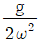
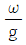
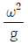
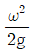
(정답률: 알수없음)
46. 다음 중 속도포텐셜(Velocity potential)의 성립조건과 관계엇는 유체의 특성은?
- 비점성
- 압축성
- 비회전성
- 연속성
(정답률: 알수없음)
47. 점성계수가 0.9 Poise 이고, 밀도가 930 kg/m3 인 유체의 동점성계수는 약 몇 Stokes 인가?
- 0.968
- 9.66 × 10-2
- 9.66
- 9.66 × 10-3
(정답률: 알수없음)
48. 일정한 속도로 비행하는 비행기의 마하수(Mach number)에 대한 설명으로 옳은 것은?
- 음속과 마하수는 비례한다.
- 온도와 마하수는 비례한다.
- 고도와 마하수는 반비례한다.
- 비행기의 속도는 마하수에 비례한다.
(정답률: 알수없음)
49. 점성계수 4.5×10-3 kgf·s/m2, 비중 0.95인 기름이 내경 200mm인 원관 속을 흐를 때 층류에서 난류 유동으로 변화하는 속도는 약 몇 m/s 인가? (단, 상임계 레이놀드수는 3600 이다.)
- 0.84
- 0.085
- 0.14
- 0.015
(정답률: 알수없음)
50. 물방울의 반지름이 반으로 감소한다면, 이 물방울 내외의 압력차는 어떻게 변하는가? (단, 표면장력은 일정하다.)
- 변함없다.
- 2배로 된다.
- 반으로 감소한다.
- 4배로 된다.
(정답률: 알수없음)
51. 원형단면 관을 통하여 유속 2m/s로 유량 0.25m3/s 이 흐른다면 이 관의 내경은 약 몇 cm 인가?
- 35.2
- 39.9
- 51.5
- 66.4
(정답률: 알수없음)
52. 다음 그림과 같이 수심 10m 인 댐의 수문이 지상 2m 위치에서 힌지되어 있다. 수문이 폭 1m인 정사각형일 때 수문의 아래쪽 끝에 일정한 힘을 가하여 수문이 열리지 않게 할 수 있는 힘 F는 몇 kN 인가? (단, 물의 밀도는 1000 kg/m3 이다.)
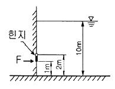
- 32.5
- 42.5
- 52.5
- 62.5
(정답률: 알수없음)
53. 다음 중 형상항력(Form drag)의 주된 원인은?
- 표면마찰
- 유속의 증가
- 박리의 발생
- 정체점의 유동 파괴
(정답률: 알수없음)
54. 다음 중 파도 이론에 대한 설명으로 틀린 것은?
- 선형파는 파장이 길수록 빨리 퍼진다.
- 수면파에서 파도의 골 아래쪽의 압력이 증가한다.
- 병진파에 있어서는 파의 퍼져나가는 방향으로 질량이동이 이루어진다.
- 심해에서 물 입자는 타원형의 궤적에 따라 움직이며, 수심이 증가할수록 단축이 작아진다.
(정답률: 알수없음)
55. 유체에 관한 Newton의 점성법칙을 이루는 변수들을 옳게 짝지은 것은?
- 압력, 속도, 점성계수
- 압력, 점성계수, 각변형률
- 전단응력, 온도, 점성계수
- 전단응력, 점성계수, 속도구배
(정답률: 알수없음)
56. 초음속으로 이동하는 관유동에 대한 설명으로 옳은 것은?
- 관의 단면적이 증가하면 속도는 증가하고 압력은 감소한다.
- 관의 단면적이 증가하면 속도는 증가하고 압력도 증가한다.
- 관의 단면적이 증가하면 속도는 감소하고 압력은 증가한다.
- 관의 단면적이 증가하여도 속도는 일정하나 압력은 감소한다.
(정답률: 알수없음)
57. 축척이 1/100인 모형선 속도가 1m/s 이고 자유표면교란으로 인한 저항이 1N 이었다면, 실선에서의 자유표면교란으로 인한 저항값은 약 몇 kN 인가? (단, 모형선과 실선에서의 물의 밀도는 1000 kg/m3, 모형선의 침수면적은 1m2 이다.)
- 10
- 50
- 100
- 1000
(정답률: 알수없음)
58. 운동량법칙을 이용하여 프로펠러의 추력을 증가시키기 위한 방법으로 틀린 것은?
- 프로펠러의 직경을 크게한다.
- 프로펠러에 유입되는 유량을 많게 한다.
- 프로펠러의 전·후면의 압력차를 크게 한다.
- 프로펠러 유입속도와 유출속도의 차를 작게 한다.
(정답률: 알수없음)
59. 다음 중 관성력과 중력의 비로 표시되는 무차원 수는?
- 웨버(Weber) 수
- 오일러(Euler) 수
- 프루드(Froude) 수
- 레이놀드(Reynolds) 수
(정답률: 알수없음)
60. 다음 중 베르누이(Bernoulli) 방정식을 옳게 나타낸 것은? (단, p : 압력, ρ : 밀도, V : 속도, g : 중력가속도, z : 높이, C : 상수이다.)
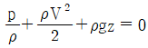
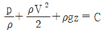
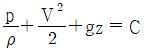
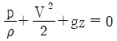
(정답률: 알수없음)
4과목: 선체의장 및 선체구조역학
61. 앵커와 앵커체인 3연을 합한 무게가 500kg이고, 정격속도가 9m/min 인 경우, 양묘기의 소요마력은 약 몇 PS 인가? (단, 앵커와 앵커체인은 양현에 각각 설치되어 있다.)
- 1
- 2
- 4
- 8
(정답률: 알수없음)
62. 주로 닻을 끌어 올리기 위한 장치로 계류 로프(Mooring rope)나 체인 케이블(Chain cable)도 감아 올릴 수 있도록 선수와 선미부에 설치되어 있는 것은?
- 윈치(Winch)
- 양묘기(Windlass)
- 볼러드(Bollard)
- 캡스턴(Capstan)
(정답률: 알수없음)
63. 개폐(開閉)장치에 따라 분류한 강재 해치커버(Steel hatch cover) 중 바깥쪽의 해치커버가 들어 올려지면 안쪽의 해치커버가 그 아래로 굴러 들어가서 겹치는 방식은?
- 폰툰형(Pontoon type)
- 미끄럼형(Sliding type)
- 피기백형(Piggy back type)
- 엔드 롤링형(End rolling type)
(정답률: 알수없음)
64. 다음 하역 방식 중 스포팅(Spotting) 능력이 가장 좋은 것은?
- 스윙식(Swing style)
- 맞당김식(Union purchase style)
- 분동권식(Counter weight style)
- 갠트리 크레인식(Gantry crane style)
(정답률: 알수없음)
65. 주로 토핑 리프트를 걸거나 매기 위해서 마스트, 갑판 등에 부착시킨 금속제 부품을 무엇이라 하는가?
- 볼러드(Bollard)
- 링플레이트(Ring plate)
- 혼클리트(Horn cleat)
- 아이플레이트(Eye plate)
(정답률: 알수없음)
66. 다음 중 타두재에 고정익을 갖는 고정자와 회전익을 갖는 로터를 설치하여 유압을 통하여 타를 회전시키는 조타장치는?
- 쿼드런트형(Quadrant type)
- 회전익형(Rotary vane type)
- 랩손 슬라이드형(Rapson slide type)
- 트렁크 피스톤형(Trunk piston type)
(정답률: 알수없음)
67. 다음 중 전기화재에 사용할 수 없는 소화기는?
- 포소화기
- 이산화탄소소화기
- 분말소화기
- 할로겐화합물소화기
(정답률: 알수없음)
68. 다음 신호장치 중 구명정에 비치되는 것이 아닌 것은?
- 신호홍염(Hand flares)
- 낙하산붙이신호(Parachute signals)
- 발연부신호(Buoyant smoke signals)
- 자기점화등(Self-igniting lights)
(정답률: 알수없음)
69. 다음 중 압축공기 또는 압력수의 분사에 의하여 일어나는 진공작용을 이용하여 빌지(Bilge)등을 흡입, 배출하는 기구는?
- 이덕터(Eductor)
- 진공펌프(Vacuum pump)
- 오리피스(Orifice)
- 흡입펌프(Suction pump)
(정답률: 알수없음)
70. 선박의 속력을 측정하는데 사용되는 항해계기는?
- 크로노미터(Chrnometer)
- 에코 사운더(Eco sounder)
- 전자로그(Electromagnetic log)
- 자기 컴퍼스(Magnetic compass)
(정답률: 알수없음)
71. 부력곡선 작성시 고려하는 가정으로 틀린 것은? (단, L은 선체의 길이이다.)
- 파장은 배의 길이와 같다.
- 파형은 사인파나 트로코이드(Trochoid)파이다.
- 파고는 1.1√L, L/20 또는 다른 기준의 표준파와 같다.
- 배의 전·후방향은 파의 진행방향에 수직으로 놓인다.
(정답률: 알수없음)
72. 선체 종강도 계산에서 표준 호깅(Hogging)상태에 대한 설명으로 틀린 것은? (단, L은 선체길이이다.)
- 표준파의 파정이 선체 중앙부에 있다.
- 화물은 균질화물로 선창에 만재해 있다.
- 선체 중앙부의 밸러스트 탱크가 만재해 있다.
- 소비중량은 선체 전·후부 L/4사이에 만재해 있다.
(정답률: 알수없음)
73. 벌크화물선의 횡격벽구조로 강재중량감소 및 작업량 감소를 위해 사용하는 구조는?
- 브래킷
- 보강격벽
- 파형격벽
- 굽힘격벽
(정답률: 알수없음)
74. 선체 중앙횡단면의 단면계수 계산에 포함되지 않는 부재는?
- 강력갑판
- 창구코밍
- 선측외판
- 중심선 거더
(정답률: 알수없음)
75. 다음 중 선박이 종경사할 때 최대굽힘응력 또는 최대압축응력을 받는 부위가 아닌 것은?
- Bilge부
- Side shell plate
- Gunwale(또는 Gunnel)부
- Stringer plate 및 Sheer strake
(정답률: 알수없음)
76. 다음 중 기둥의 좌굴 하중 값이 가장 큰 경우는?
- 양단 고정인 기둥
- 양단 힌지로 지지된 경우
- 하단 고정이고 상단은 자유단인 경우
- 하단 고정이고 상단은 힌지로 지지된 경우
(정답률: 알수없음)
77. 선박의 횡단면에 걸리는 종굽힘모멘트가 180000 kgf·m 이고, 횡단면의 중립축에 관한 2차 모멘트가 54000m2·mm2, 중립축으로부터 갑판 최상측 부위까지의 거리가 1.8m, 선저 최하층 부위까지의 거리가 1.2m 일 때, 이 횡단면에 작용하는 굽힘응력의 최대값은 약 몇 kgf/mm2 인가?
- 3.33
- 4.00
- 6.00
- 7.20
(정답률: 알수없음)
78. 선체에 작용하는 국부하중 중 충격하중에 해당되는 것은?
- 화물하중
- 슬로싱하중
- 선체자중
- 건조시의 하중
(정답률: 알수없음)
79. 다음 중 선체 비틀림 강도를 가장 우선적으로 고려해야 할 선종은?
- 유조선
- LNG선
- 여객선
- 컨테이너선
(정답률: 알수없음)
80. 보강재가 중앙에 붙어 있는 보강판 내의 X방향의 인장 응력분포가 그림과 같고, 최대응력 σmax = 20kg/mm2, 최소응력 σmin = 16kg/mm2, 평균응력 σa = 18kg/mm2 일 때, 유효 폭은 보강판의 폭 b의 몇 % 인가?
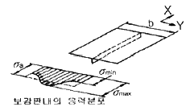
- 60
- 70
- 80
- 90
(정답률: 알수없음)
5과목: 선박건조공학 및 선박동력장
81. 다음 중 선대공사에 속하지 않는 작업은?
- 블록탑재
- 블록조립
- 선형 결정짓기
- 선체의 지지와 거치
(정답률: 알수없음)
82. 조선소의 입지조건에 대한 설명으로 틀린 것은?
- 조선소 규모에 적합한 해안선을 가지고 또 우수한 항구일 것
- 동력이 풍부하고 주요 자재, 노동력 공급이 용이할 것
- 간만의 차가 진수 출입 및 계류에 지장을 주지 않을 정도이고, 조류가 심하지 않을 것
- 담수의 공급을 위하여 강우량이 많고 건선거 건설비의 절약을 위하여 지반이 연질일 것
(정답률: 알수없음)
83. 소조립 공장에서 강판의 이동시 자력을 이용하는 장비는?
- Hoist
- Vacuum 조구
- Fork lift
- Liffing magnet
(정답률: 알수없음)
84. 산소-에틸렌 절단에 대한 설명으로 틀린 것은?
- 불꽃의 집중성이 아세틸렌보다 강하다.
- 선내 작업이나 협소 공간 작업에서 적합하다.
- 절단에 사용되는 에틸렌의 비중은 공기보다 가볍다.
- 화학적 안정성은 산소 아세틸렌절단 방법에 비해 높다.
(정답률: 알수없음)
85. 조립공정에서 사용되는 방법으로 라인화된 정반에서 작업자가 공정 팀별로 움직이며 정해진 작업을 진행하여 공정을 진행하는 방식으로 절동작업방식이라고도 하는 방식은?
- 택트(Tact)작업
- 스테이지(Stage)작업
- JIT(Just In Time)작업
- GT(Group Technology)작업
(정답률: 알수없음)
86. 건조 방식을 선택할 때 고려하여야 할 사항이 아닌 것은?
- 공사량의 평준화가 쉬워야 한다.
- 가능하면 상하작업과 혼재작업 등이 없어야 한다.
- 조선소의 설비와 기술을 고려한 방식이어야 한다.
- 선각은 선행화 작업을 하되, 의장은 안벽에서 작업을 집중할 수 있어야 한다.
(정답률: 알수없음)
87. 옥내 대조립 공장의 위치에 대한 설명으로 틀린 것은?
- 반드시 해안선을 따라 배치되어야 한다.
- 내업공장·소조립 공장에 직결되는 위치에 있는 것이 필요하다.
- 독(Dock)보다도 내업공장과의 상관성을 중시하는 것이 바람직하다.
- 선각공장배치 전체로서 재료의 운반 능률을 고려하여야 한다.
(정답률: 알수없음)
88. 조선용 강재의 가공, 조립공정 기간 중에 녹이 발생하는 것을 방지하기 위한 것으로 도장작업 중 1차 작업에 해당하는 것은?
- 숏블라스팅(Shot blasting)
- 샌드블라스팅(Sand blasting)
- 숍 프라이밍(Shop priming)
- 모르타르 라이닝(mortar lining)
(정답률: 알수없음)
89. 다음 조선용 재료 중 유리섬유와 수지의 복합재료로서 소형선박의 재료로 주로 사용되는 것은?
- 강
- FRP
- 목재
- 알루미늄합금
(정답률: 알수없음)
90. 블록기준선 설정시 주의사항에 대한 설명으로 틀린 것은?
- 가능한 한 간단한 수의 치수로 할 것
- 관계블록들 사이에 공통된 것으로 할 것
- 되도록 시임, 버트에 근접하도록 겹쳐지도록 할 것
- 기준선이 1개의 경우는 블록의 중앙에 통하게 할 것
(정답률: 알수없음)
91. 다음 중 일반적으로 열효율이 가장 좋은 기관은?
- 디젤 기관
- 가스터빈 기관
- 가솔린 기관
- 증기터빈 기관
(정답률: 알수없음)
92. 다음 중 프로펠러의 효율을 높일 수 있는 방법이 아닌 것은?
- 프로펠러의 직경을 크게 한다.
- 프로펠러의 회전수를 낮게 한다.
- 프로펠러를 지나는 유량을 적게 한다.
- 프로펠러의 하중계수(Loading coefficient)를 적게 설계한다.
(정답률: 알수없음)
93. 선박용 추진기관 중 가스터빈의 장점이 아닌 것은?
- 환경 친화적이다.
- 소음이 낮고 진동이 적다.
- 무게당 부피에 비해 출력이 높다.
- 동일출력의 디젤기관보다 연료유 소비량이 적다.
(정답률: 알수없음)
94. 2단 감속장치에서 1단 감속비는 8.66, 2단 감속비는 6.36 이라면 원동기의 회전수가 6000rpm 일 때 프로펠러의 회전수는 약 몇 rpm 인가?
- 93
- 109
- 692
- 4406
(정답률: 알수없음)
95. 증기터빈 복수기 내부의 진공도를 높이면 얻을 수 있는 장점에 대한 설명으로 가장 옳은 것은?
- 압력이 낮으므로 기밀을 유지하기 쉽다.
- 냉각수 온도가 높아져 열손실이 줄어든다.
- 열효율이 높아지고 출력을 증가시킬 수 있다.
- 급수 온도를 낮출 수 있어 열효율이 높아진다.
(정답률: 알수없음)
96. 다음 중 추진기관의 전추진효율을 옳게 나타낸 것은? (단, EHP : 유효마력, BHP : 제동마력, THP : 추력마력 이다.)
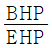
(정답률: 알수없음)
97. 다음 중 선박용 4 행정 디젤기관의 주요부품이 아닌 것은?
- 분연펌프
- 크랭크축
- 커넥팅 로드
- 실린더 라이너
(정답률: 알수없음)
98. 추진기 중 유체를 분사 노즐을 통하여 흐르게 하여 압력에너지를 속도에너지로 바꿔 이 때의 반작용으로 추력을 발생하는 형식은?
- 외륜 추진기
- 나선형 추진기
- 분사 추진기
- 수직축 회전 추진기
(정답률: 알수없음)
99. 증기 터빈과 같은 회전 기계의 동력을 나타낼 때 사용하는 것으로, 추진 원동기와 추진기 사이의 중간축에 전달되는 회전력을 측정하여 구하는 동력은?
- 축 동력
- 제동 동력
- 지시 동력
- 전달 동력
(정답률: 알수없음)
100. 추력 베어링(Thrust bearing)의 구조에 따른 종류가 아닌 것은?
- 상자형(Box type)
- 미첼형(Mitchell type)
- 말굽형(Horse shoe type)
- 호이드 슈나이더형(Voith Schneider type)
(정답률: 알수없음)
주형비척계수는 다음과 같은 공식으로 계산된다.
Cb = (배의 용적) / (L3 x √(해수의 비중))
여기서, 배의 용적은 배수량을 해수의 비중으로 나눈 값이다. 따라서,
배의 용적 = 2100 / 1.025 = 2048.78 m3
또한, L3은 배의 길이를 세 번 곱한 값이므로,
L3 = 100 x 100 x 100 = 1,000,000 m3
따라서,
Cb = 2048.78 / (1,000,000 x √1.025) ≈ 0.488
따라서, 정답은 "0.488"이다.